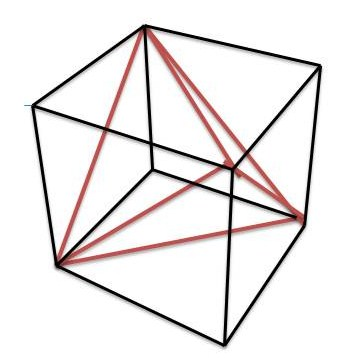

\(S_4\), the symmetric group on \(4\) elements, has an interesting homomorphism to \(S_3\). Observe \(S_4\) is the isometry group of the tetrahedron, and the tetrahedron has \(6\) edges: each has an 'opposite edge' it is not adjacent to, and there are \(3\) such pairs. Permuting the four points permutes the three pairs, giving a homomorphism \(S_4\) to \(S_3\). Nothing quite like this map exists for any other symmetric group.
